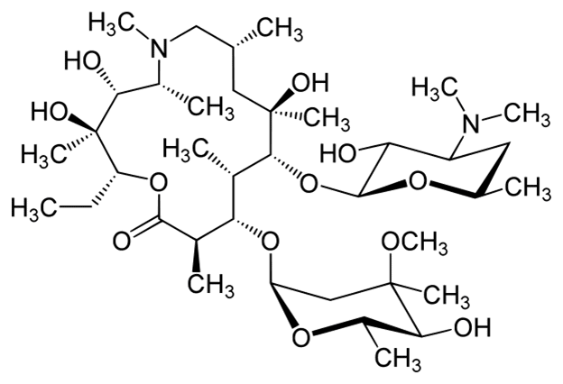

Азитромицин (Azithromycin) - показания к применению
Структурная формула антибиотика, С38H72N2O12
Основные показания (по МКБ-10)
- инфекции верхних дыхательных путей и ЛОР-органов: фарингит, тонзиллит, синусит, средний отит;
- инфекции нижних дыхательных путей: острый бронхит, обострение хронического бронхита, пневмония, в т.ч. вызванная атипичными возбудителями;
- инфекции кожи и мягких тканей: угри обыкновенные средней степени тяжести, рожа, импетиго, вторично инфицированные дерматозы;
начальная стадия болезни Лайма (боррелиоз) - мигрирующая эритема (erythema migrans);- инфекции мочеполовых путей, вызванные Chlamydia trachomatis (уретрит, цервицит).
Фармакология
Фармакологичное действие - антибактериальное широкого спектра
Связывается с 50S субъединицей рибосом, угнетает пептидтранслоказу на стадии трансляции и подавляет биосинтез белка, замедляя рост и размножение бактерий, при высоких концентрациях возможен бактерицидный эффект.
Применение вещества Азитромицин
Для приема внутрь: инфекции верхних (стрептококковый фарингит/тонзиллит) и нижних (бактериальный бронхит, интерстициальная и альвеолярная пневмония, обострение хронического бронхита) отделов дыхательных путей, лор-органов (средний отит, ларингит и синусит), мочеполовой системы (уретрит и цервицит), кожи и мягких тканей (рожа, импетиго, вторичные инфицированные дерматозы), хроническая стадия мигрирующей эритемы (болезнь Лайма), заболевания желудка и двенадцатиперстной кишки, ассоциированные с Helicobacter pylori.
Для инфузий: тяжелые инфекции, вызванные чувствительными штаммами микроорганизмов: внебольничная пневмония, инфекционно-воспалительные заболевания органов малого таза.